MyBox User Guide – Media Tools v6.6
MyBox: Easy Tools Set
User Guide – Media Tools
Author: Mara
Version: 6.6
Date: 2022-9-28
Contents
1 Introduction 3
1.1 Main Interface 3
1.2 Resources Addresses 4
1.3 Documents 5
1.4 Menu of Tools 5
2 Play Videos/Audios 6
3 Manage Playlist 7
4 Wrap Functions of ffmpeg 8
4.1 Base 8
4.2 Record Screen 10
4.3 Convert Videos/Audios in Batch 11
4.4 Combine Images And Audios As Video 11
4.5 Read Media Information with ffprobe 12
4.6 Read Information of ffmpeg 13
5 Game-Elimination 14
6 Game-Mine 15
This is desktop application based on JavaFx to provide simple and easy functions. It's free and open sources.
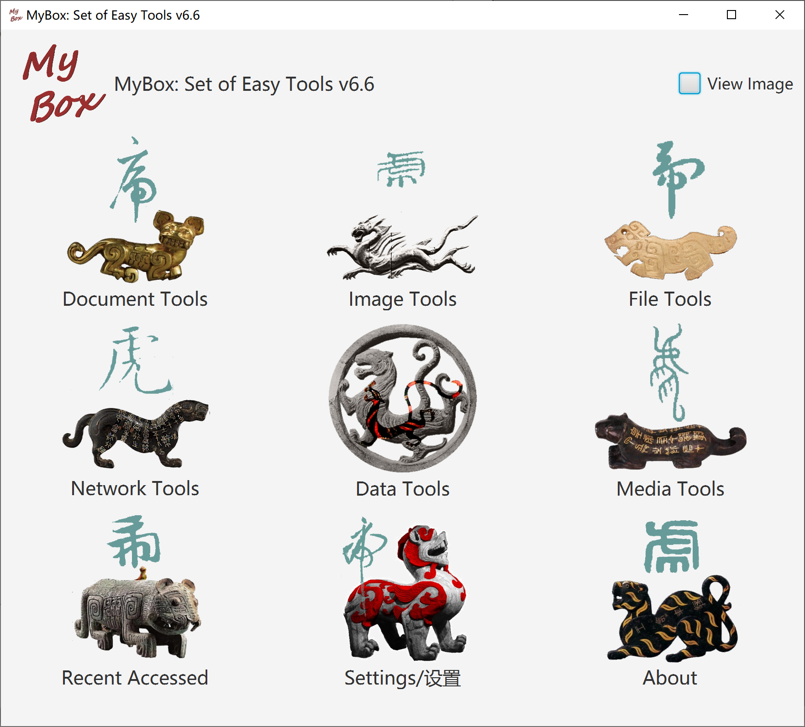
|
Contents |
Link |
|---|---|
|
Project Main Page |
|
|
Source Codes and Compiled Packages |
|
|
Submit Software Requirements and Problem Reports |
|
|
Data |
|
|
Documents |
|
|
Mirror Site |
|
|
Cloud Storage |
https://pan.baidu.com/s/1fWMRzym_jh075OCX0D8y8A#list/path=%2F |
|
Name |
Version |
Time |
English |
Chinese |
|---|---|---|---|---|
|
Development Logs |
6.6 |
2022-9-28 |
||
|
Shortcuts |
6.5.6 |
2022-6-11 |
||
|
Packing Steps |
6.3.3 |
2020-9-27 |
||
|
Development Guide |
2.1 |
2020-8-27 |
||
|
User Guide - Overview |
6.6 |
2022-9-28 |
||
|
User Guide - Document Tools |
6.6 |
2022-9-28 |
||
|
User Guide - Image Tools |
6.6 |
2022-9-28 |
||
|
User Guide - File Tools |
6.6 |
2022-9-28 |
||
|
User Guide - Network Tools |
6.6 |
2022-9-28 |
||
|
User Guide - Data Tools |
6.6 |
2022-9-28 |
||
|
User Guide - Media Tools |
6.6 |
2022-9-28 |
||
|
User Guide - Development Tools |
6.6 |
2022-9-28 |
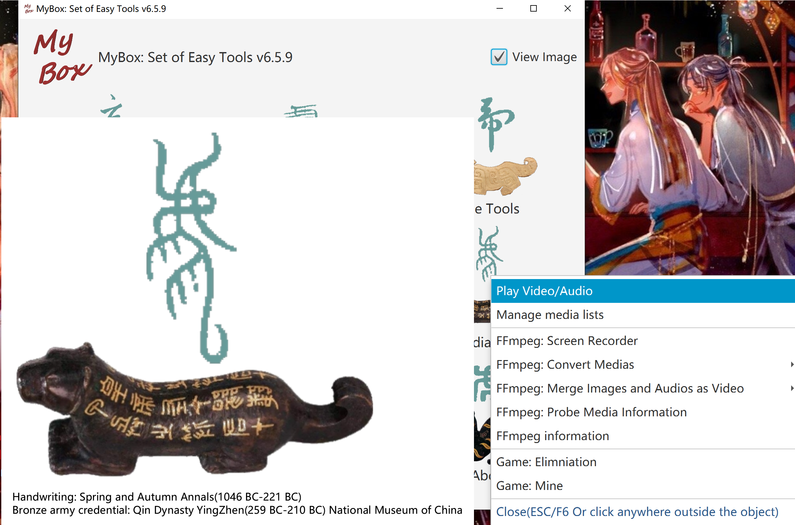
Create/load playlist
Options: auto-play, display milliseconds, loop number, random order
Set: volumn, speed(0~8 times)
Buttons: Play, Pause, Stop, Next, Previous, Media-info, Mute, Full-screen
When full screen, display controls in short duration by clicking screen, and quit full-screen by ESC
Support muxer format: aiff, mp3, mp4, wav, hls(m3u8), video codec: h.264/avc, audio codec: aac, mp3, pcm.
If video does not sound, this is due to unsupported audio codec.
Known issue: MyBox may quit when play some media stream.
Sounds of GuaiGuai and BenBen
This tool need not ffmpeg. But libavcodec and libavformat are required on Linux, and refer to:
https://www.oracle.com/technetwork/java/javafx/downloads/supportedconfigurations-1506746.html
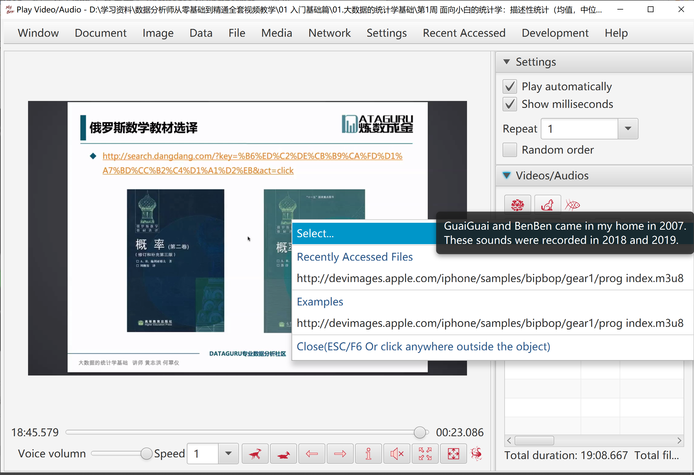
Create/Delete/Update playlists.
Add/Delete items in playlists.
Read medias information, including duration, audio encoding, and video encoding.
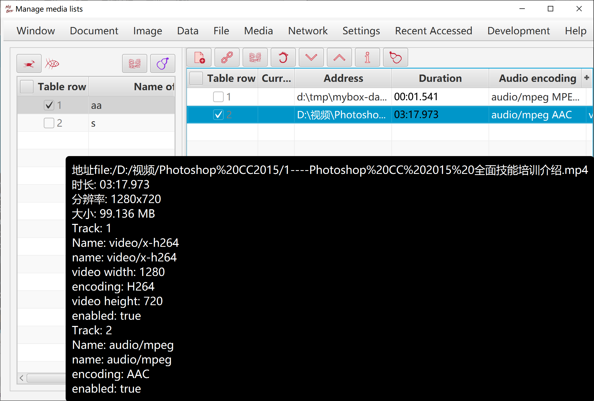
Notice: This set of functions is based on ffmpeg, and user need download ffmpeg by yourself. (Suggest to use static version)
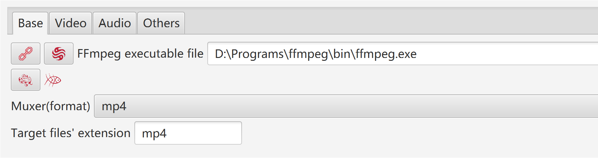
When handle media:
All parameters can be selected/set, including format, codec, subtitle, frame rate, sample rate, change volumn, etc.
Button "Default": When NVIDIA is available, chooce "h264_nvenc" as video encoder, to make use of hardware acceleartion.
Most of players support: muxer "mp4", video codec "H.264", audio codec "AAC".
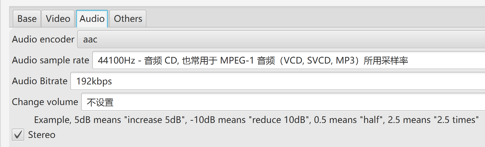
Try different options of encoders, preset, and CRF, to get suitable settings of your computer, as following factors :
The encoder should be fast enough to record without frames dropping.
Consume limited system resources, and leave enough CPU and memory for other applications.
Quality and size of the generated file are tolerable.
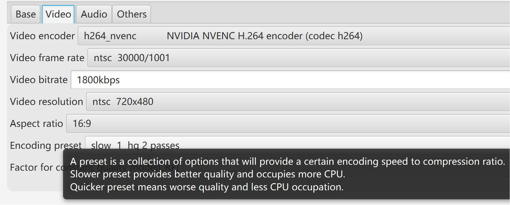
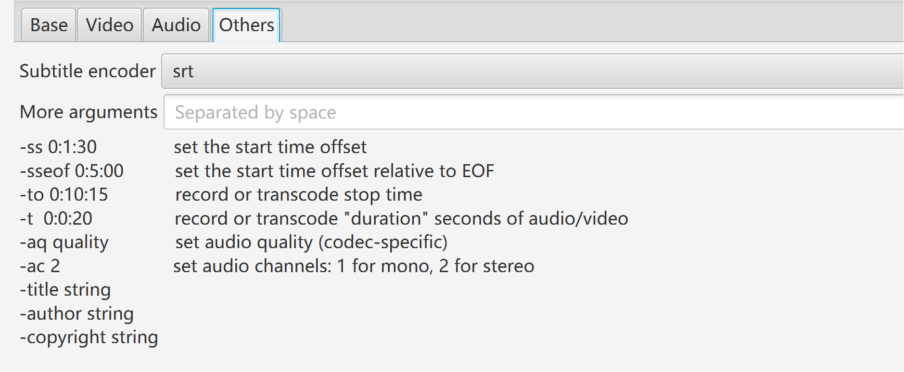
- When have not NVIDIA and CPU is not so powerful:
- Choose "libx264rgb" as video encoder, to bypass conversion from RGB to yuv444p.
- Select quicker encoding preset.
- After recording, use conversion tool to change generated video from RGB to yuv444p with encoder "libx264".
- Select whether record video：
- Set size of threads queue.
- Record area: full screen, window by title, rectangle.
- Select wether record audio:
- Detect audio cards automatically, and pick the first one as the audio device.
- Set size of threads queue.
- Set delay:
- If "unlimited", record at once when user click button "Start".
- If valid value, recording will start when this time is past.
- Set duration:
- If "unlimited", record untill user click button "Stop".
- If valid value, recording will end when duration completes. User can click button "Stop" to finish recording at any time.
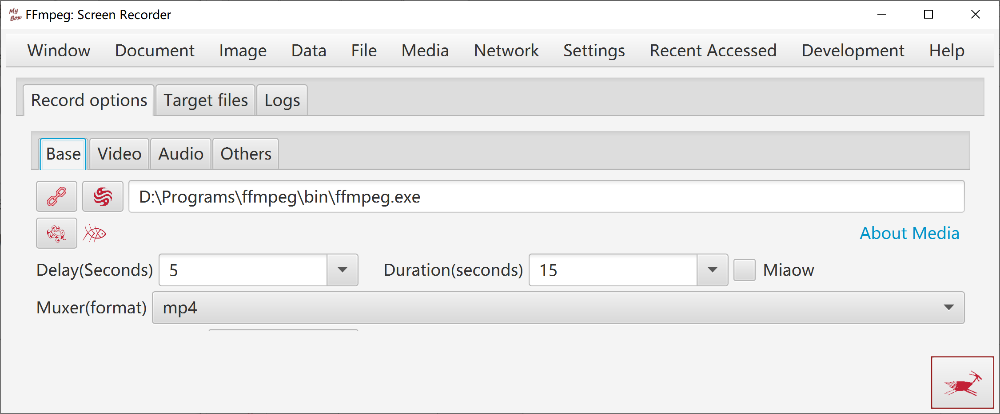
Source files are listed as files/directories.
Source files are listed as streams and medias information.
Source files are listed as files/directories.
Source files are listed as streams and medias information.
Duration can be set for each image, or set for all images.
Option: End video when audios finish.
Images are adjusted automatically to fit for screen size meanwhile keep width-height ratio.
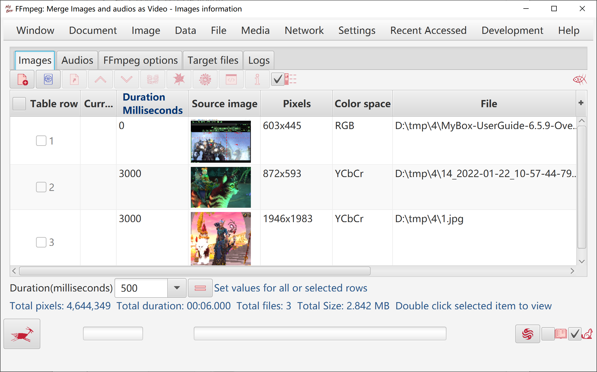
Format, audio stream, video stream, frames, packets, pixel formats.
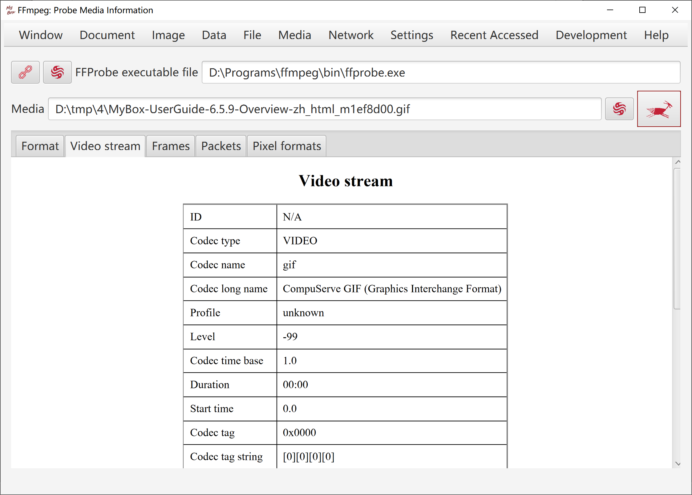
Version, supported formats/codecs/filters, and query with customized parameters.
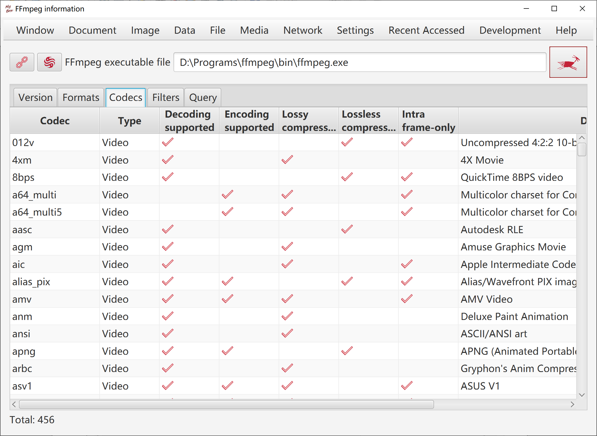
Options about chesses images, number, size, effects like dropshadow or arc.
Chesses can be predefined images, user defined images, or colors.
Sound: praise from GuaiGuai, praise from BenBen, 3-conection from Ben and others from Guai, mute, or any mp3/wav file.
Counted chesses: Make scores only when eliminate selected types of chesses.
Customize rulers that how to give score when eliminate different type of connection.
Set strategy when deadlock happens: keep score and renew game, make chance of elimination, or pop alert to have user chooce.
Options: speed of automation, times of flush when eliminate, whether pop scores.
Button "Help Me": prompt valid step.
Button "Play Automatically": click to play by compute and click again to stop it.
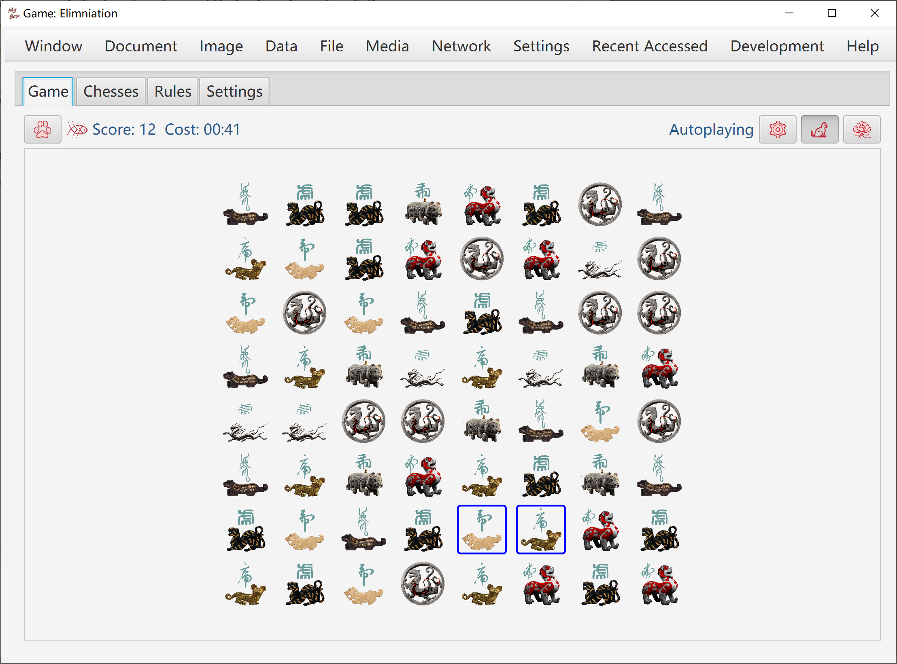
Target: Disclose all cells which are not mines. Game fails once a mine is opened.
Rulers:
When game is started, all cells are in status "closed".
Start timing when click a cell at first time.
Count: Opened cells number / Total number of cells which are not mines.
When left-click a cell, nothing happens when it is "disclosed", or else:
If it is a mine, then game fails.
If it is not a mine, then it is opened and its status becomes "disclosed".
If there are mines around this cell, then the number of mines around it is shown in the cell.
If there is no mine around this cell, then it is shown as blank and all cells around it will be disclosed. Continue this process.
When right-click a cell, nothing happens when it is "disclosed", or else:
If this cell is not marked, then mark it as "Mine".
If this cell is marked as "Mine", then change its mark as "Suspected".
If this cell is marked as "Suspected", then remove its mark.
Right-clicking only marks the cell, and will not trigger mine nor disclose the cell.
When double-click a cell:
If the cell is in status "closed", then disclose it.
Disclose all cells which are not marked as "Mine" around this cell.
Do this only when you are sure all mines are marked correctly around this cell.
When you are unlucky to trigger a mine:
Click button "Undo", to pretend that did not happen and continue the timing and counting.
Click button "Replay", to restart the same game.
Click button "New Game" to start a different game.
Click button "Help me" to see all mines secretly, and click button "Undo" to continue playing.
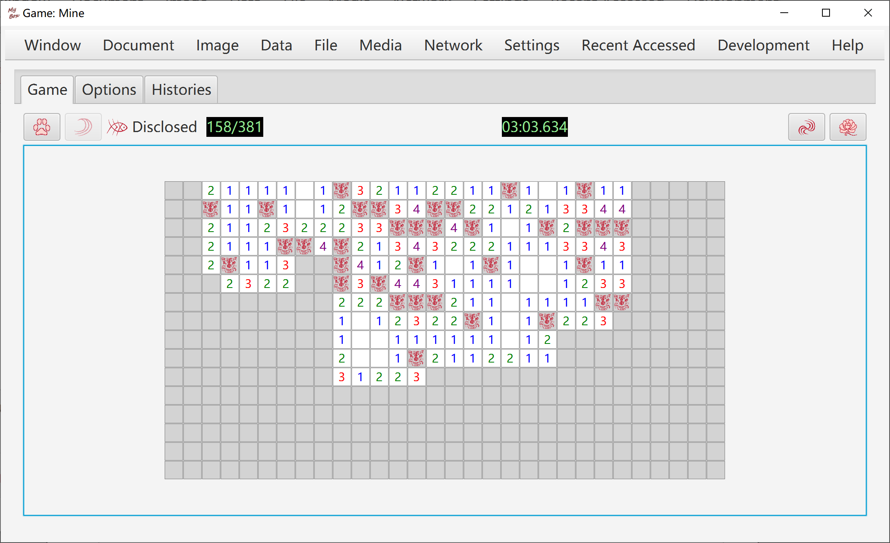
<End of Document>
Page